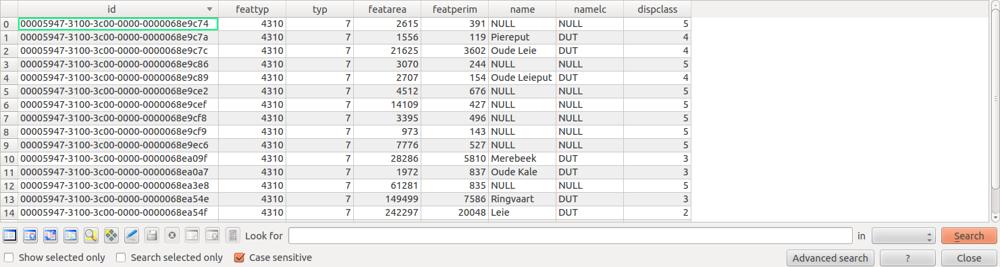
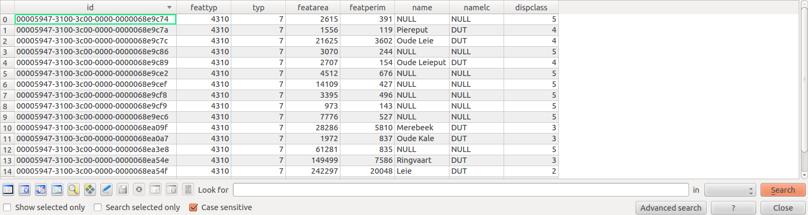

MNR Infrastructure
Create nightly build chains for UC3 and D64
All build plans are visible in the MN-R view on Jenkins:
- Periodic build plan was already set up (Hakuna Matata)
- Create nightly-build plan (D64, UC3)
- Create weekly-build plan (DEU)
- Create statistics
- Setup traffic light to indicate build success
Next step: stop using jenkins as pcontrol replacement...
- project dependencies in Jenkins are hard to see/maintain
- Jenkins is a tool for helping developers (not an operational processing tool)
- required to have the same reusable process template for PB/NB/WB/operations

 
